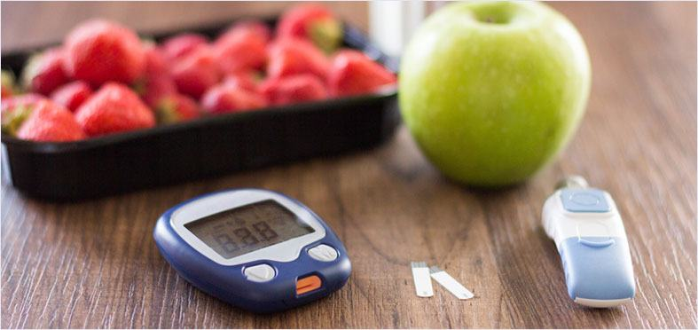

ОСНОВНО ЗДРАВЕ КРЪВНА ЗАХАР


Нивата на кръвната захар са основна грижа за хората с диабет. Високата кръвна захар, известна като хипергликемия, се появява, когато нивото на кръвната захар на човек е над 180 милиграма на децилитър (mg / dL).
Знаете ли, че нарушеното ниво на кръвната захар може да има отрицателни последици за здравето и качеството на живот "диабетици", които усещат симптомите, без дори да го знаят?
В тази статия разглеждаме естествени препарати, които помагат за понижаване на кръвната захар.
Защо контролът на кръвната захар е важен?

Поддържането на кръвната Ви захар в целевите Ви стойности може да Ви помогне да избегнете здравословни проблеми с висока кръвна захар.
С течение на времето нездравословните нива на кръвната захар могат да увредят малки и големи кръвоносни съдове в няколко органа и системи, което води до сериозни последици, които включват: увреждане на зрението и слепота, язви на краката, инфекции и ампутации, бъбречна недостатъчност и диализа, сърце и инсулт, заболявания на периферната съдова система и увреждане на нервната система, което води до болка и слабост.
Вижте тези невероятни статистически данни: до 90% от хората в Балгария имат нарушено ниво на кръвната захар. Чувствате ли, че сте гладни повече от нормалното? Или сте жадни повече от обикновено? Усещате ли болка в горната част на краката или, че глезените и стъпалата са подути? Ако е така, тогава има голям шанс да страдате от ефектите на повишените нива на кръвната захар.
Когато поддържате нивата на кръвната захар под 100 mg / dL преди хранене и под 180 mg / dL след хранене, можете значително да намалите риска от странични ефекти от нарушени нива на кръвната захар в кръвта.
Как да намалим кръвната захар
Ето един чудесен начин как да намалите кръвната си захар и да намалите риска от усложнения:
1 Намалете приема на въглехидрати
Изследователите са провели проучвания, показващи, че консумирането на храни с ниско съдържание на въглехидрати и високо съдържание на протеини намалява нивата на кръвната захар.
Някои въглехидрати са от съществено значение в диетата. Въпреки това, за много хора (особено тези с диабет), приемането на твърде много въглехидрати може да причини прекомерен скок на кръвната захар.
Намаляването на количеството въглехидрати, което човек приема, намалява скоковете на кръвната захар.
2 Яжте правилните въглехидрати
Двата основни типа въглехидрати са: прости и сложни. Те влияят по различен начин на нивата на кръвната захар.
Простите въглехидрати се състоят предимно от един вид захар. Те се намират в храни като бял хляб, тестени изделия и сладкиши. Тялото разгражда тези въглехидрати до захари много бързо, което води до бързо повишаване на нивото на кръвната захар.
Сложните въглехидрати се състоят от три или повече вида захари, които са свързани помежду си. Тъй като химическите връзки между тези видове захар са сложни, тялото се нуждае от повече време за разграждане.
B резултат на това захарта се освобождава в тялото постепенно, което означава, че нивото на кръвната захар не се повишава бързо след хранене. Примерите за сложни въглехидрати включват пълнозърнести храни и сладки картофи.
3 Изберете храни с нисък гликемичен индекс
Гликемичният индекс измерва и подрежда различни храни според това как причиняват повишаване на нивата на кръвната захар. Изследванията показват, че спазването на диета с нисък гликемичен индекс намалява бързия скок в нивата на кръвната захар.
Храни с нисък гликемичен индекс са тези, които имат стойност, по-ниска от 55. Примери за храни с нисък гликемичен индекс са: сладки картофи, киноа, бобови растения, нискомаслени мазнини, зеленолистни зеленчуци, зеленчуци без скорбяла, ядки и семена, месо и риба.
4 Редовен прием на добавки за контрол на кръвната захар
Допълненията за поддържане на нивата на кръвната захар като често се споменават в медиите напоследък, и то с основателна причина.
Направени от естествени съставки, е препарат, който помага за стабилизиране на нивата на кръвната захар. Основните предимства на приема на добавки включват поддържане на здравословна имунна функция, повишаване на здравословния въглехидратен и липиден метаболизъм, поддържане на здравословни нива на кръвната захар.
Допълнителен бонус е, че той помага при отслабване, тъй като високата кръвна захар предизвиква отделянето на излишък от инсулин, който не позволява на организма да изгаряне на мазнини.
Най-хубавото е, че е лесно да се приема. Приготвяйте и пийте неподсладен чай няколко пъти на ден. Тъй като е направен от естествени съставки, нямате нужда от рецепта, за да го закупите.
Какво друго трябва да знам?
Ако страдате от вредното въздействие на високата кръвна захар, можете да използвате като допълнителна естествена добавка.
Нуждаете ли се от повече информация? Ето още информация за това защо е толкова страхотна:
е напълно естествено решение, което включва смес от растителни екстракти. Не се изисква рецепта.
като естествен чай определено
си заслужава да се опита, защото няма какво да губите.
Къде да го купите?
Не се поддавайте на евтини копия онлайн. Посетете сайта им, за да купите истински веднага.
Спрете да хвърляте пари. Поемете контрола днес.
Ако високата кръвна захар ви причинява разочарование и намалява качеството ви на живот, тогава имате нужда от по-добро решение. Поемете контрола и вземете .
Специално предложение за читателите ни
 Приложение: Налични са само още 20 пакета.
Приложение: Налични са само още 20 пакета.
Специалната оферта изтича на:

КОМЕНТАРИ

347 коментара 
Катя Топ коментари
Харесва ми усещането в краката ми! Наистина ми беше много трудно дълго време. Забравих какво е краката ми да са здрави.

Румен •  172 последователи
172 последователи
Боря се с високата кръвна захар в продължение на много месеци и знаех, че съм напът да приемам лекарства за нормализиране. И бях много щастлив, когато успях сам да я регулирам.
Маргарита •
122 последователи
Мога да обикалям къщата и двора с лекота, c която не можех допреди 2 месеца, защото бях почти вързана за леглото поради изтръпване на краката

Мария •
67 последователи
Топло е и ми харесва! Поради лоша циркулация краката и ръцете ми бяха постоянно студени през целия ден. И сега това го няма вече.

Спас •
49 последователи
Играх за първи път от 10 години. Никога не съм мислил, че краката ми ще бъдат достатъчно здрави, за да мога да играя отново. За щастие, съм грешал.

Петя •
38 последователи
Отново се чувствам нормално. Краката ми изглеждат нормални и се чувствам много по-добре от преди.